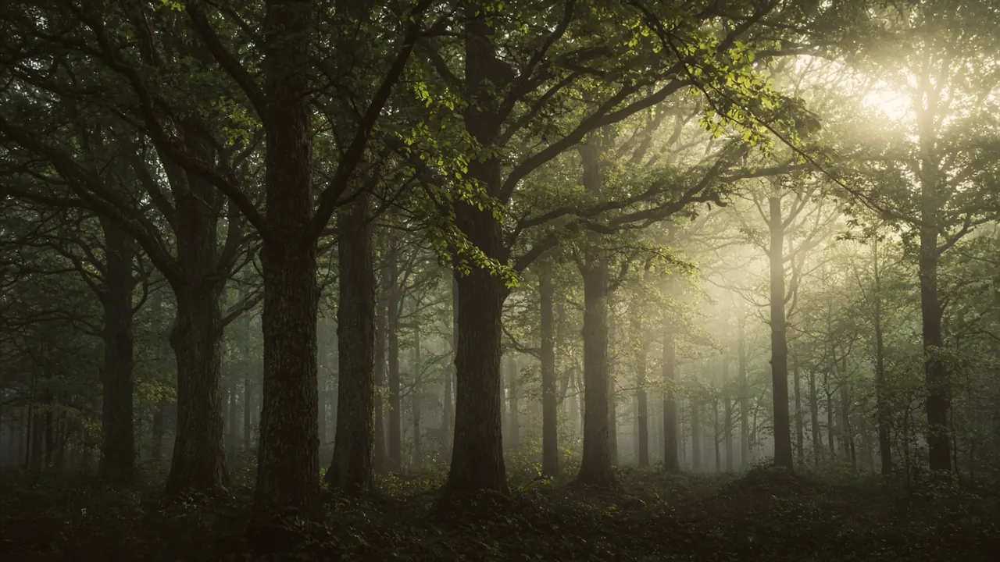
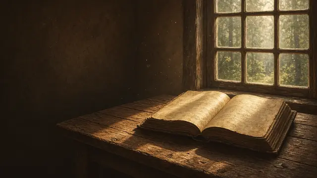
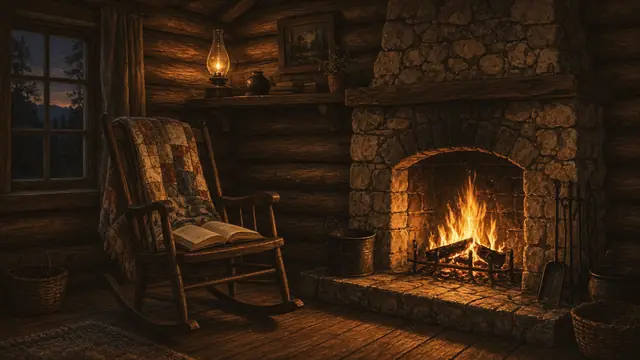
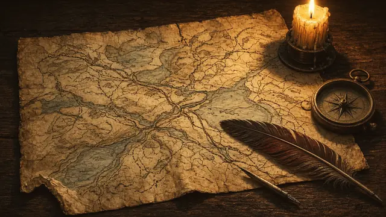
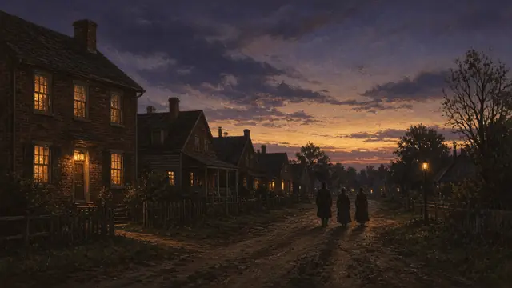
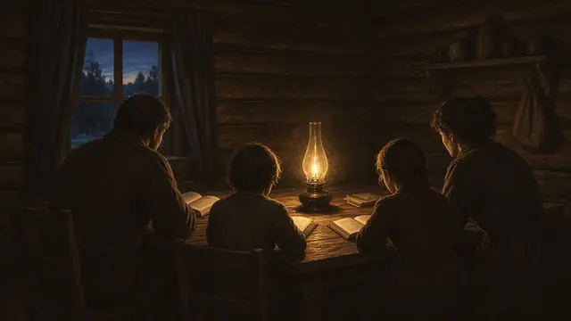

The Book
Twelve chapters
From a prisoner’s candle at Vilvoorde to the road out of Nauvoo: the story told from the records the people themselves left.

A Famine of Hearing
From Tyndale's cell to a Passover table and a Vermont farmhouse: the long wait for heaven to speak again.

Seeds in Stony Ground
Solomon and Lydia Mack, Asael and Mary Smith: two plain New England families and the seeds they planted.

Lucy and Joseph
A wedding gift, a lost fortune, a covenant made on a sickbed, and a son born in Sharon, Vermont.

The Boy Who Would Not Be Bound
A boy who would not be bound, a year without a summer, and a mother who brought her children west.

A Pillar of Light
A verse in James, a grove of trees, and a pillar of light in the spring of 1820.

The Last Words of Malachi
An angel quotes Malachi, Alvin dies, Joseph marries Emma, and the plates are entrusted to him.

By the Gift and Power of God
Lost pages, a schoolteacher scribe, priesthood by the river, witnesses, and five thousand copies.

Come and See
A church organized in a log house, a knapsack of books, and a gathering to Ohio.

The Lord's House
The Kirtland Temple is built, dedicated, and visited by Elijah at Passover in 1836.

The Refiner's Fire
Kirtland's trials, the Missouri war, the ice of the Mississippi, and the jail at Liberty.

A City Beautiful
Nauvoo rises from a swamp: healing, baptism for the dead, the Relief Society, and a prayer in Jerusalem.

Carthage, and the Work Rolls On
Carthage, the martyrdom, and a work that rolled on.

“Nathanael said unto him, Can there any good thing come out of Nazareth? Philip saith unto him, Come and see.”John 1:46
Come and see
Walk the places, meet the people
Read the story, walk the places, meet the people and read their own words.

Come and See
Twelve chapters from Tyndale’s cell to Carthage, with the PDF and narrated audio.

Listen
The whole book, narrated chapter by chapter.

Restoration sites
37 places on an interactive map, each linked to its chapter.

People of the Restoration
93 short biographies, with portraits where they exist.
Timeline of events
The key dates from 1536 to 1844, in order.
Visit the sites
Addresses and official pages for the places you can visit today.
Primary sources
The first accounts, in the Joseph Smith Papers and other collections.

Study guides
A short guide for each chapter, for families and classes.